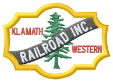

Last updated: 7 September, 2025
| Website: | knwrr.org |
| Email: | knwrr7.5@gmail.com |
| Location: | 36951 S Chiloquin Rd, Chiloquin, OR 97624 |
| GPS: | 42.560041, -121.885113 Parking, I think. |
| Phone: | 541-576-9386 |
Subject to change. Check website for latest information: | |
| Summer Saturdays: | Memorial Day to Labor Day Saturdays 10:00 am to 3:00 pm |
The Klamath and Western Railroad Inc. provides train rides for the public on summer Saturdays from Memorial Day weekend until Labor Day weekend. Food and refreshments are available and so is plenty of fresh air. Lots of fun for kids of all ages, especially the young at heart. 3